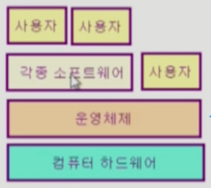

운영체제
👀 운영체제란?
- Operating System, OS
-
컴퓨터 하드웨어 바로 위에 설치되어 사용자 및 다른 모든 소프트웨어와 하드웨어를 연결하는 소프트웨어 계층
 - 좁은 의미의 운영체제(커널)
- 운영체제의 핵심 부분으로 메모리에 상주하는 부분
- 전공자 입장에서는 운영체제 하면 커널만을 이야기한다.
- 넓은 의미의 운영체제
- 커널 뿐 아니라 메모리에 상주하지 않는 각종 주변 시스템 유틸리티를 포함한 개념
- 커널 뿐 아니라 메모리에 상주하지 않는 각종 주변 시스템 유틸리티를 포함한 개념
🔸 운영체제의 목적
- 컴퓨터 시스템을 편라하게 사용할 수 있는 환경 제공
- 컴퓨터 시스템의 자원을 효율적으로 관리
- 하드웨어 자원인 프로세서, 기억장치, 입출력 장치들의 관리와
- 소프트웨어 자원인 프로세스, 파일, 메시지 등 모든 것을 관리한다.
- 사용자간의 형평성 있는 자원 분배가 가능해야 하고 주어진 자원으로 최대한의 성능을 낼 수 있어야 한다.
- 실행 중인 프로그램들은 CPU를 번갈아가며 차지하며 동작을 하게 되는데 이 때 운영체제는 한 프로그램이 CPU를 너무 오랫동안 쓰지 않고 짧은 시간동안 번갈아 쓰도록 할당해 주어야 한다.
- 또한 실행 중인 프로그램들에게 메모리 공간을 적절히 분배해 주어야 한다.
🔸 운영체제의 분류
- 동시 작업 가능 여부
- 사용자의 수
- 처리 방식
- 위 세 가지에 따라 분류할 수 있는데 현대 운영체제는 동시 작업이 가능하고 다중 사용자를 지원하며 시분할이 가능하다고 정리할 수 있다.
☑️ 동시 작업 가능 여부
단일 작업(single tasking)
- 한 번에 하나의 작업만을 처리한다.
- 예) MS-DOS 프롬프트 상에서는 한 명령의 수행을 끝내기 전에 다른 명령을 수행시킬 수 없음
- 과거에 MS-DOS에서 주로 사용되던 방식으로 현대 컴퓨터에선 쓰이지 않지만 엘리베이터처럼 기능이 단순하거나 특수 목적을 수행하는 기계에는 지금도 사용되고 있다.
다중 작업(multi tasking)
- 동시에 두 개 이상의 작업 처리
- 예) UNIX, MS Windows 등에서는 한 명령의 수행이 끝나기 전에 다른 명령이나 프로그램을 수행할 수 있음
- 스마트폰을 포함한 현대의 대부분의 하드웨어에서 사용되는 운영체제이다.
☑️ 사용자의 수
단일 사용자(single user)
- 예) MS-DOS, MS Windows
다중 사용자(multi user)
- 예) UNIX, NT server
- 사용자가 많아지면 파일에 대한 접근 권한이나 사용자간 자원 분배를 형평성 있게 해 줄 수 있어야 한다.
☑️ 처리 방식
일괄 처리(batch processing)
Interactive하지 않은 방식- 작업 요청을 일정량 모아서 한꺼번에 처리
- 작업이 완전 종료될 때까지 기다려야 함(하루 이상 걸림)
- 에) 초기 Punch Card 처리 시스템
시분할(time sharing)
Interactive한 방식- 현대에 주로 사용하는 운영체제로 일반적인 범용 컴퓨터에서 사용
- 여러 작업을 수행할 때 컴퓨터 처리 능력을 일정한 시간 단위로 분할해서 사용
- 일괄 처리 시스템에 비해 짧은 응답 시간을 가짐(UNIX)
- 하지만 응답 시간이 항상 고정된 것은 아니며 사용자가 많아지면 느려질 수 있다.
- 사람이 빠르다고 느끼면서 주어진 자원과 시간을 최대한 활용하는 것이 목적이다.
실시간(Realtime OS)
- 정해진 시간 안에 어떠한 일이 반드시 종료됨이 보장되어야 하는 실시간시스템을 위한 OS
- 원자로/공장 제어, 미사일 제어, 반도체 장비, 로보트 제어 등 특수 목적을 가진 시스템에서 사용된다.
▪️ 실시간 시스템의 개념 확장
- Hard realtime system(경성 실시간 시스템)
- 데드라인을 지키지 않으면 큰일나는 시스템
- 예) 반도체, 미사일 등
- Soft realtime system(연성 실시간 시스템)
- 데드라인을 좀 못 지켜도 괜찮은 시스템
- 예) OTT
🔸 비슷한 의미로 사용되지만 약간 다른 용어들
Multitasking: 하나의 프로그램이 끝나기 전에 다른 프로그램 작업이 가능한 것Multiprogramming: 여러 프로그램이 메모리에 올라가 있는 것을 강조Time sharing:CPU의 시간을 분할하여 나누어 쓴다는 것을 강조Multiprocess: 여러 프로그램이 동시에 실행된다.- => 모두 컴퓨터에서 여러 작업을 동시에 수행한다는 것을 뜻하지만 어디에 더 초점을 맞추느냐에 따라 다르게 사용된다.
☑️ Multiprocessor
- 하나의 컴퓨터에
CPU(processor)가 여러 개 붙어 있음을 의미 CPU가 하나임을 전제로 하는 위의 네 가지 용어들과는 하드웨어적으로 다르다.
🔸 운영체제의 예
☑️ 유닉스(UNIX)
- 멀티태스킹 가능
- 다중 사용자용
- 대형 서버용
- 코드의 대부분을 C언어로 작성 - 기계어 사용에 어려움이 많아서 유닉스 개발용으로 C언어를 만들었다.
- 높은 이식성 - 다른 기계어 집합을 사용하는 컴퓨터에 이식이 쉽다.
- 최소한의 커널 구조
- 복잡한 시스템에 맞게 확장 용이
- 소스 코드 공개 - 학술적으로 사용하기 좋다.
- 프로그램 개발에 용이
- 다양한 버전
- System V, FeeBSD, SunOS, Solaris - 유로. 소스 코드 비공개
- Linux - 무료. 소스 코드 공개. 유닉스보다는 규모가 작은 환경이나 개인용 컴퓨터에 사용된다.
☑️ DOS(Disk Operating System)
- MS사에서 1981년 IBM-PC를 위해 개발
- 단일 사용자용 운영체제
- 싱글태스크
- 메모리 관리 능력의 한계(주 기억 장치 최대 용량 : 640KB)
☑️ MS Windows
- MS사의 다중 작업용 GUI 기반 운영체제
- Plug and Play, 네트워크 환경 강화
- DOS용 응용 프로그램과 호환성 제공
- 불안정성(초창기 윈도우즈)
- 풍부한 지원 소프트웨어
☑️ Handheld device를 위한 OS
- PalmOS, Pocket PC(WinCE), Tiny OS
🔸 운영체제의 구조
- 크게
CPU-memory-Disk-I/O device구조
☑️ CPU
CPU 스케줄링을 통해 실행중인 프로그램들에게CPU를 효율적으로 할당해야 함CPU에게는 선착순 처리가 효율적이지 않기 때문에 프로그램마다 걸리는 작업 시간에 따라 처리하도록 스케줄링한다.
☑️ memory
- 프로그램을 실행하려면
memory에 올려야 하는데memory는 한정되어 있기 때문에 적당히 잘 쪼개어 써야 한다. - 최근에 많이 사용된 데이터는 오래 보관하고 그렇지 않으면 쫓아내는 방식으로 관리
☑️ Disk
Disk에는 헤드가 있고 그 헤드를 움직이면서 일정 위치에 파일을 기록하기 때문에I/O요청이 들어왔을 때 헤드를 최대한 적게 움직이면서 최대한 빠르게 많이 처리할 수 있도록 처리 순서를 스케줄링 해야 한다.
☑️ I/O device
- 지금까지 나온 장치들 중에선 가장 느리다.
- 때문에
인터럽트기반으로 관리되며CPU는 평소에는 자기 할 일을 하고 있다가I/O장치에서인터럽트요청이 들어오면 입출력을 수행하는 방식으로 진행된다.
☑️ 프로세스 관리
- 프로세스의 생성과 삭제
- 자원 할당 및 반환
- 프로세스 간 협력
☑️ 그 외
- 보호 시스템
- 네트워킹
- 명령어 해석기(command line interpreter)